건설재료시험기사 (2022-04-24 기출문제)
1과목: 콘크리트공학
1. 콘크리트의 양생에 대한 설명으로 틀린 것은?
- 거푸집판이 건조될 우려가 있는 경우에는 살수하여 습윤 상태로 유지하여야 한다.
- 막양생제는 콘크리트 표면의 물빛(水光)이 없어진 직후에 얼룩이 생기지 않도록 살포하여야 한다.
- 콘크리트는 양생 기간 중에 유해한 작용으로부터 보호하여야 하며, 재령 5일이 될 때까지는 물에 씻기지 않도록 보호한다.
- 고로 슬래그 시멘트 2종을 사용한 경우, 습윤 양생의 기간은 보통 포틀랜드 시멘트를 사용한 경우보다 짧게 하여야 한다.
(정답률: 알수없음)

2. 프리스트레스트 콘크리트 부재에서 프르스트레스의 손실 원인 중 프리스트레스 도입 후에 발생하는 시간적 손실의 원인에 해당하는 것은?
- 정착장치의 활동
- 콘크리트의 탄성수축
- 긴장재 응력의 릴랙세이션
- 포스트텐션 긴장재와 덕트 사이의 마찰
(정답률: 알수없음)
3. 일반콘크리트의 비비기는 미리 정해 둔 비비기 시간의 최대 몇 배 이상 계속해서는 안 되는가?
- 2배
- 3배
- 4배
- 5배
(정답률: 알수없음)
4. 소요의 품질을 갖는 프리플레이스트 콘크리트를 얻기 위한 주입 모르타르의 품질에 대한 설명으로 틀린 것은?
- 굳지 않은 상태에서 압송과 주입이 쉬워야 한다.
- 굵은 골재의 공극을 완벽하게 채울 수 있는 양호한 유동성을 가지며, 주입 작업이 끝날 때까지 이 특성이 유지되어야 한다.
- 모르타르가 굵은 골재의 공극에 주입되어 경화되는 사이에 블리딩이 적으며, 팽창하지 않아야 한다.
- 경화 후 충분한 내구성 및 수밀성과 강재를 보호하는 성능을 가져야 한다.
(정답률: 알수없음)
5. 콘크리트의 시방배합이 아래의 표와 같을 때 공기량은 얼마인가? (단, 시멘트의 밀도는 3.15 g/cm3, 잔골재의 표건 밀도는 2.60 g/cm3, 굵은 골재의 표건 밀도는 2.65 g/cm3 이다.)
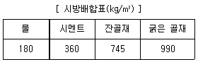
- 2.6%
- 3.6%
- 4.6%
- 5.6%
(정답률: 알수없음)
6. 비파괴 시험 방법 중 콘크리트 내의 철근부식 유무를 평가할 수 있는 방법이 아닌 것은?
- 반발경도법
- 자연전위법
- 분극저항법
- 전기저항법
(정답률: 알수없음)
7. 프리스트레스트 콘크리트에 대한 설명으로 틀린 것은?
- 굵은 골재의 최대 치수는 보통의 경우 25mm를 표준으로 한다.
- 프리스트레스트 콘크리트용 그라우트의 물-결합재비는 45% 이하로 하여야 한다.
- 프리텐션 방식으로 프리스트레싱할 때 콘크리트의 압축강도는 30MPa 이상이어야 한다.
- 프리스트레싱할 때 긴장재에 인장력을 설계값 이상으로 주었다가 다시 설계값으로 낮추는 방법으로 시공하여야 한다.
(정답률: 알수없음)
8. 아래는 고강도 콘크리트의 타설에 대한 내용으로 ( ) 안에 들어갈 알맞은 값은?
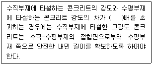
- 1.4
- 1.6
- 1.8
- 2.0
(정답률: 알수없음)
9. 콘크리트 압축 강도 시험에서 공시체에 하중을 가하는 속도는 압축응력도의 증가율이 매초 몇 MPa 이 되도록 하여야 하는가?
- (6.0±0.4) MPa
- (6.0±0.04) MPa
- (0.6±0.4) MPa
- (0.06±0.04) MPa
(정답률: 알수없음)
10. 아래는 압축강도에 의한 콘크리트의 품질 검사 판정기준으로 ( ) 안에 들어갈 알맞은값은? (단, 호칭강도(fcn)로부터 배합을 정한 경우이며, fcn ＞ 35MPa 이다.)
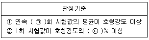
- ㉠ : 3, ㉡ : 90
- ㉠ : 5, ㉡ : 90
- ㉠ : 3, ㉡ : 80
- ㉠ : 5, ㉡ : 80
(정답률: 알수없음)
11. 콘크리트의 압축강도를 기준으로 거푸집널을 해체하고자 할 때 확대기초, 보, 기둥 등의 측면 거푸집널은 압축강도가 최소 얼마 이상인 경우 해체할 수 있는가?
- 5 MPa 이상
- 14 MPa 이상
- 설계기준압축강도의 1/3 이상
- 설계기준압축강도의 2/3 이상
(정답률: 알수없음)
12. 일반콘크리트 타설에 대한 설명으로 틀린 것은?
- 타설한 콘크리트를 거푸집 안에서 횡방향으로 이동시켜서는 안 된다.
- 한 구획 내의 콘크리트 타설이 완료될 때까지 연속해서 타설하여야 한다.
- 콘크리트는 그 표면이 한 구획 내에서는 거의 수평이 되도록 타설하는 것을 원칙으로 한다.
- 콘크리트 타설 도중 표면에 떠올라 고인 블리딩수가 있을 경우에는 콘크리트 표면에 홈을 만들어 흐르게 하여 제거한다.
(정답률: 알수없음)
13. 매스 콘크리트의 온도균열 발생에 대한 검토는 온도균열지수에 의해 평가하는 것을 원칙으로 한다. 철근이 배치된 일반적인 구조물의 표준적인 온도균열지수의 값 중 균열발생을 제한할 경우의 값으로 옳은 것은?
- 1.5 이상
- 1.2 ~ 1.5
- 0.7 ~ 1.2
- 0.7 이하
(정답률: 알수없음)
14. 굳지 않은 콘크리트의 워커빌리티에 대한 설명으로 옳은 것은?
- 시멘트의 비표면적은 워커빌리티에 영향을 주지 않는다.
- 모양이 각진 골재를 사용하면 워커빌리티가 개선된다.
- AE제, 플라이애시를 사용하면 워커빌리티가 개선된다.
- 콘크리트의 온도가 높을수록 슬럼프는 증가하여 워커빌리티가 개선된다.
(정답률: 알수없음)
15. 숏크리트의 시공에 대한 일반적인 설명으로 틀린 것은?
- 건식 숏크리트는 배치 후 45분 이내에 뿜어붙이기를 실시하여야 한다.
- 습식 숏크리트는 배치 후 60분 이내에 뿜어붙이기를 실시하여야 한다.
- 숏크리트는 타설되는 장소의 대기 온다가 25℃ 이상이 되면 건식 및 습식 숏크리트 모두 뿜어붙이기를 할 수 없다.
- 숏크리트는 대기 온다가 10℃ 이상일 때 뿜어붙이기를 실시한다.
(정답률: 알수없음)
16. 22회의 압축강도 시험 결과로부터 구한 압축강도의 표준편차가 5MPa 이었고, 콘크리트의 호칭강도(fcn)가 40MPa 일 때 배합강도는? (단, 표준편차의 보정계수는 시험횟수가 20회인 경우 1.08 이고, 25회인 경우 1.03 이다.)
- 47.10 MPa
- 47.65 MPa
- 48.35 MPa
- 48.85 MPa
(정답률: 알수없음)
17. 시방배합 결과 콘크리트 1m3 에 사용되는 물은 180kg, 시멘트는 390kg, 잔골재는 700kg, 굵은 골재는 1100kg 이었다. 현장 골재의 상태가 아래와 같을 때 현장배합에 필요한 단위 굵은 골재량은?
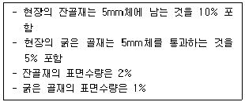
- 1060 kg
- 1071 kg
- 1082 kg
- 1093 kg
(정답률: 알수없음)
18. 아래는 유동화 콘크리트의 슬럼프에 대한 내용으로 ( ) 안에 들어갈 알맞은 값은?
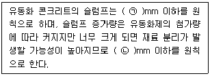
- ㉠ : 180, ㉡ : 100
- ㉠ : 210, ㉡ : 100
- ㉠ : 180, ㉡ : 150
- ㉠ : 210, ㉡ : 150
(정답률: 알수없음)
19. 급속 동결 융해에 대한 콘크리트의 저항 시험방법에서 동결 융해 1사이클의 소요시간으로 옳은 것은?
- 1시간 이상, 2시간 이하로 한다.
- 2시간 이상, 4시간 이하로 한다.
- 4시간 이상, 5시간 이하로 한다.
- 5시간 이상, 7시간 이하로 한다.
(정답률: 알수없음)
20. 콘크리트의 크리프에 대한 설명으로 틀린 것은?
- 부재의 치수가 작을수록 크리프는 증가한다.
- 단위시멘트량이 많을수록 크리프는 증가한다.
- 조강 시멘트는 보통 시멘트보다 크리프가 작다.
- 상대습도가 높고, 온도가 낮을수록 크리프는 증가한다.
(정답률: 알수없음)
2과목: 건설시공 및 관리
21. 45000m3의 성토 공사를 위하여 토량의 변화율이 L=1.2, C=0.9인 현장 흙을 굴착 운반하고자 한다. 이때 운반 토량은?
- 60000m3
- 55000m3
- 50000m3
- 45000m3
(정답률: 알수없음)
22. 현장 타설 콘크리트 말뚝의 장점에 대한 설명으로 틀린 것은?
- 지층의 깊이에 따라 말뚝의 길이를 자유로이 조절할 수 있다.
- 말뚝선단에 구근을 만들어 지지력을 크게 할 수 있다.
- 현장 지반 중에서 제작·양생되므로 품질관리가 쉽다.
- 시공 중에 발생하는 소음 및 진동이 적어 도심지 공사에도 적합하다.
(정답률: 알수없음)
23. 폭우 시 옹벽 배면에 배수시설이 취약하면 옹벽저면을 통하여 침투수의 수위가 올라간다. 이 침투수가 옹벽에 미치는 영향으로 틀린 것은?
- 활동면에서의 양압력 발생
- 옹벽 저면에 대한 양압력 발생
- 수동저항(passive resistance)의 증가
- 포화 또는 부분포화에 의한 흙의 무게 증가
(정답률: 알수없음)
24. 도로 파손의 주요 원인인 소성변형의 억제방법 중 하나로 기존의 밀입도 아스팔트 혼합물 대신 상대적으로 큰 입경의 골재를 이용하는 아스팔트 포장방법을 무엇이라 하는가?
- SBR
- SBA
- SMR
- SMA
(정답률: 알수없음)
25. 공사일수를 3점 시간 추정법에 의해 산정할 경우 적절한 공사 일수는? (단, 낙관일수는 6일, 정상일수는 8일, 비관일수는 10일이다.)
- 6일
- 7일
- 8일
- 9일
(정답률: 알수없음)
26. 말뚝의 부주면 마찰력(negative friction)에 대한 설명으로 틀린 것은?
- 말뚝의 주변지반이 말뚝의 침하량 보다 상대적으로 큰 침하를 일으키는 경우 부주면 마찰력이 생긴다.
- 지하수위가 상승할 경우 부주면 마찰력이 생긴다.
- 표면적이 작은 말뚝을 사용하여 부주면 마찰력을 줄일 수 있다.
- 말뚝 직경보다 약간 큰 케이싱을 박아서 부주면 마찰력을 차단할 수 있다.
(정답률: 알수없음)
27. 아래 그림과 같은 지형에서 시공 기준면의 표고를 30m로 할 때 총 토공량은? (단, 격자점의 숫자는 표고를 나타내며 단위는 m 이다.)
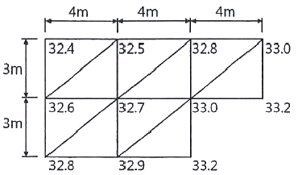
- 142 m3
- 168
- 184 m3
- 213 m3
(정답률: 알수없음)
28. 줄눈이 벌어지거나 단차가 발생하는 것을 막기 위해 세로 줄눈 등을 횡단하여 콘크리트 슬래브의 중앙에 설치하는 이형 철근을 무엇이라 하는가?
- 타이바
- 루팅
- 슬립바
- 컬러코트
(정답률: 알수없음)
29. 공기 케이슨 공법에 대한 설명으로 틀린 것은?
- 장애물의 제거가 용이하고 경사의 교정이 가능하다.
- 토질을 확인할 수 있고 정확한 지지력 측정이 가능하다.
- 소규모 공사 또는 심도가 얕은 곳에는 비경제적이다.
- 배수를 하면서 시공하므로 지하수위 변화를 주어 인접지반에 침하를 일으킨다.
(정답률: 알수없음)
30. 착암기로 표준암을 천공하여 60cm/min의 천공속도를 얻었다. 천공 깊이 3m, 천공수 15공을 한 대의 착암기로 암반을 천공할 경우 소요되는 총 소요 시간은? (단, 표준암에 대한 천공 대상암의 암석저항 계수는 1.35, 작업조건계수는 0.6, 전천공시간에 대한 순천공시간의 비율은 0.65 이다.)
- 2.0시간
- 2.4시간
- 3.0시간
- 3.4시간
(정답률: 알수없음)
31. 관의 지름(D)이 20cm, 관의 길이(L)가 300m, 관내의 평균유속(V)이 0.6m/s일 때 원활한 배수를 위한 관 길에 대한 낙차는? (단, Giesler의 공식에 의한다.)
- 0.86m
- 1.35m
- 1.84m
- 2.24m
(정답률: 알수없음)
32. 토공현장에서 흙의 운반거리가 60m, 불도저의 전진속도가 40m/min, 후진속도가 100m/min, 기어 변속시간이 0.25분이고, 1회의 압토량이 2.3m3, 작업효율이 0.65 일 때 불도저의 시간당 작업량을 본바닥 토량으로 구하면? (단, 토량의 변화율 C = 0.9, L = 1.25 이다.)
- 27.4 m3/h
- 30.5 m3/h
- 38.6 m3/h
- 42.4 m3/h
(정답률: 알수없음)
33. 교랑 가설 공법 중 동바리를 사용하는 공법에 해당하는 것은?
- 새들식 공법
- 크레인식 공법
- 이동벤트식 공법
- 캔틸레버식 공법
(정답률: 알수없음)
34. 암거 둘레의 흙이 포화된 경우 지하수위가 상승할 때 암거가 빈 상태로 되면 양압력 때문에 암거가 뜨는 일이 있다. 이를 방지하기 위한 수단으로 틀린 것은?
- 자중을 증가시킨다.
- 흙 쌓기의 양을 증가시킨다.
- 암거의 토압과 마찰력을 감소시킨다.
- 배수공법으로 지하수위를 저하시킨다.
(정답률: 알수없음)
35. 역타(Top-down) 공법에 대한 설명으로 틀린 것은?
- 작업 능률이 높아 시공성이 우수하며, 공사비용이 저렴하다.
- 상부 구조물과 지하 구조물을 동시에 시공하므로 공기단축이 가능하다.
- 건물 본체의 바닥 및 보를 구축한 후 이를 지지구조로 사용하여 흙막이의 안정성이 높다.
- 1층 바닥을 선시공하여 작업장으로 활용하고 악천후에도 하부 굴착과 구조물의 시공이 가능하다.
(정답률: 알수없음)
36. 운반토량 1200m3을 용적이 8m3인 덤프트럭으로 운반하려고 한다. 트럭의 평균속도는 10km/h 이고, 상·하차 시간이 각각 4분일 때 하루에 전량을 운반하려면 몇 대의 트럭이 필요한가? (단, 1일 덤프트럭 가동시간은 8시간이며, 토사장까지의 거리는 2km 이다.)
- 10대
- 13대
- 15대
- 18대
(정답률: 알수없음)
37. 그림과 같이 성토 높이가 8m인 사면에서 비탈 경사가 1 : 1.3일 때 수평거리 x는?
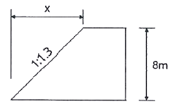
- 6.2m
- 8.3m
- 9.4m
- 10.4m
(정답률: 알수없음)
38. CPM기법 중 더미(dummy)에 대한 설명으로 옳은 것은?
- 시간은 필요 없으나 자원은 필요한 활동이다.
- 자원은 필요 없으나 시간은 필요한 활동이다.
- 자원과 시간이 필요 없는 명목상의 활동이다.
- 자원과 시간이 모두 필요한 활동이다.
(정답률: 알수없음)
39. TBM공법에 대한 설명으로 틀린 것은?
- 폭약을 사용하지 않고, 원형으로 굴착하므로 역학적으로도 안전하다.
- 기계의 시공 충격으로 인하여 발파공법보다 동바리공이 더 많이 필요하다.
- 기계에 의한 굴착이므로 작업환경이 양호하며 낙반 등의 사고 위험이 적다.
- 발파공법에 비하여 특히 암질에 의한 제약을 많이 받기 때문에 지질조사가 중요하다.
(정답률: 알수없음)
40. 록 볼트의 정착형식은 선단 정착형, 전면 접착형, 혼합형으로 구분할 수 있다. 이에 대한 설명으로 틀린 것은?
- 록 볼트 전장에서 원지반을 구속하는 경우에는 전면 접착형이다.
- 선단을 기계적으로 정착한 후 시멘트 밀크를 주입하는 것은 혼합형이다.
- 경암, 보통암, 토사 원지반에서 팽창성 원지반까지 적용범위가 넓은 것은 전면 접착형이다.
- 암괴의 봉합효과를 목적으로 하는 것은 선단 정착형이며, 그 중 쐐기형이 많이 사용된다.
(정답률: 알수없음)
3과목: 건설재료 및 시험
41. 콘크리트용 인공경량골재에 대한 설명으로 틀린 것은?
- 인공경량골재의 부립률이 클수록 콘크리트의 압축강도는 저하된다.
- 흡수율이 큰 인공경량골재를 사용할 경우 프리웨팅(pre-wetting)하여 사용하는 것이 좋다.
- 인공경량골재를 사용하는 콘크리트는 공기연행 콘크리트로 하는 것을 원칙으로 한다.
- 인공경량골재를 사용한 콘크리트의 탄성계수는 보통골재를 사용한 콘크리트 탄성계수보다 크다.
(정답률: 알수없음)
42. 터널 굴착을 위하여 장약량 4kg으로 시험 발파한 결과 누두지수(m)가 1.5, 폭파반경(R)이 3m이었다면, 최소저항선 길이를 5m로 할 때 필요한 장약량은?
- 6.67kg
- 11.1kg
- 18.5kg
- 62.5kg
(정답률: 알수없음)
43. 아래 설명에 해당하는 재료의 일반적 성질은?
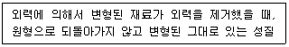
- 탄성
- 소성
- 취성
- 인성
(정답률: 알수없음)
44. 혼화재료 중 감수제에 대한 설명으로 틀린 것은?
- 시멘트 입자를 분산시킴으로서 단위수량을 줄인다.
- 공기연행 작용이 없는 감수제와 공기연행 작용을 함께 하는 AE감수제 등으로 나누어진다.
- 감수제를 사용하면 동결융해에 대한 저항성이 증대된다.
- 감수제를 사용하면 동일한 워커빌리티 및 강도의 콘크리트를 얻기 위해 시멘트가 더 많이 들어가야 한다.
(정답률: 알수없음)
45. 콘크리트용 혼화재료의 일반적인 성질에 대한 설명으로 틀린 것은?
- 방청제는 철근이나 PC강선이 부식하는 것을 방지하기 위해 사용한다.
- 지연제는 시멘트의 수화반응을 늦춰 응결시간을 길게 할 목적으로 사용되는 혼화제이다.
- 촉진제는 보통 염화칼슘을 사용하며 일반적인 사용량은 시멘트 질량에 대하여 2% 이하를 사용한다.
- 급결제를 사용한 콘크리트는 초기 28일의 강도증진은 매우 크고, 장기강도의 증진 또한 큰 경우가 많다.
(정답률: 알수없음)
46. 시멘트의 응결시험 방법으로 옳은 것은?
- 비비 시험
- 오토클레이브 방법
- 길모어 침에 의한 방법
- 공기 투과 장치에 의한 방법
(정답률: 알수없음)
47. 암석의 구조에 대한 설명으로 옳은 것은?
- 암석 특유의 천연적으로 갈라진 금을 절리라 한다.
- 퇴적암이나 변성암의 일부에서 생기는 평행상의 절리를 벽개라 한다.
- 암석의 가공이나 채석에 이용되는 것으로 갈라지기 쉬운 면을 석리라 한다.
- 암석을 구성하고 있는 조광광물의 집합 상태에 따라 생기는 눈모양을 층리라 한다.
(정답률: 알수없음)
48. 스트레이트 아스팔트에 대한 설명으로 틀린 것은?
- 블론 아스팔트에 비해 투수계수가 크다.
- 블론 아스팔트에 비해 신장성이 크다.
- 블론 아스팔트에 비해 점착성이 크다.
- 블론 아스팔트에 비해 감온성이 크다.
(정답률: 알수없음)
49. 다음은 비철금속 재료 중 어떤 것에 대한 설명인가?
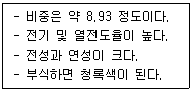
- 니켈
- 구리
- 주석
- 알루미늄
(정답률: 알수없음)
50. 아래와 같은 경량 굵은 골재에 대한 밀도 및 흡수율 시험을 하고자 할 때 1회 시험에 사용되는 시료의 최소 질량은?
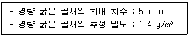
- 2.0 kg
- 2.5 kg
- 2.8 kg
- 5.0 kg
(정답률: 알수없음)
51. 시멘트의 저장 및 사용에 대한 설명으로 틀린 것은?
- 시멘트는 방습적인 구조물에 저장한다.
- 시멘트를 쌓아올리는 높이는 13포대 이하로 하는 것이 바람직하다.
- 저장 중에 약간 굳은 시멘트는 품질검사 후 사용한다.
- 시멘트의 온도는 일반적으로 50℃ 이하에서 사용한다.
(정답률: 알수없음)
52. 콘크리트용으로 사용하는 굵은 골재의 안정성은 황산나트륨으로 5회 시험을 하여 평가한다. 이때 손실질량은 몇 % 이하를 표준으로 하는가?
- 15%
- 12%
- 10%
- 7%
(정답률: 알수없음)
53. 제철소에서 발생하는 산업부산물로서 냉수나 차가운 공기 등으로 급랭한 후 미분쇄하여 사용하는 혼화재료는?
- 고로슬래그 미분말
- 플라이애시
- 실리카 퓸
- 화산회
(정답률: 알수없음)
54. 시멘트의 일반적인 성질에 대한 설명으로 틀린 것은?
- 시멘트가 불안정하면 이상팽창 등을 일으켜 콘크리트에 균열을 발생시킨다.
- 시멘트의 입자가 작고 온도가 높을수록 수화속도가 빠르게 되어 초기강도가 증가된다.
- 시멘트의 분말도가 높으면 수축이 크고 균열발생의 가능성이 크며, 시멘트 자체가 풍화되기 쉽다.
- 시멘트의 응결 시간은 수량이 많고 온도가 낮으면 빨라지고, 분말도가 높거나 C3A의 양이 많으면 느리게 된다.
(정답률: 알수없음)
55. 목재의 건조에 대한 설명으로 틀린 것은?
- 건조 시 목재의 강도 및 내구성이 증가한다.
- 목재 건조 시 방부제 등의 약제주입을 용이하게 할 수 있다.
- 목재 건조 시 균류에 의한 부식과 벌레에 의해 피해를 예방할 수 있다.
- 목재의 자연건조법 중 수침법을 사용하면 공기 건조의 시간이 길어진다.
(정답률: 알수없음)
56. 석재를 사용할 경우 고려해야 할 사항으로 틀린 것은?
- 내화구조물에는 석재를 사용할 수 없다.
- 석재를 다량으로 사용 시 안정적으로 공급할 수 있는지 여부를 조사한다.
- 휨응력과 인장응력을 받는 곳은 가급적이면 사용하지 않는 것이 좋다.
- 외벽이나 콘크리트 포장용 석재에는 가급적이면 연석은 피하는 것이 좋다.
(정답률: 알수없음)
57. 지오신세틱스-제2부(KS K ISO10318-2)에서 아래 그림이 나타내는 토목섬유의 주요 기능은?
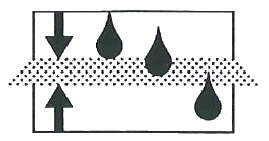
- 배수
- 여과
- 보호
- 분리
(정답률: 알수없음)
58. 역청재료의 침입도 지수(PI)를 구하는 식으로 옳은 것은? (단,
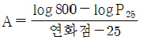
이고, P25는 25℃ 에서의 침입도이다.)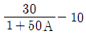
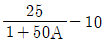
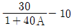
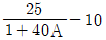
(정답률: 알수없음)
59. 마샬시험방법에 따라 아스팔트 콘크리트 배합 설계를 진행 중이다. 재료 및 공시체에 대한 측정결과에 아래와 같을 때 포화도는?
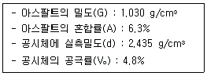
- 58%
- 66%
- 71%
- 76%
(정답률: 알수없음)
60. 다음 중 골재의 조립률을 구하는데 사용되는 표준체의 크기가 아닌 것은?
- 40mm
- 10mm
- 1.5mm
- 0.3mm
(정답률: 알수없음)
4과목: 토질 및 기초
61. 그림과 같은 지반에서 하중으로 인하여 수직응력(△σ1)이 100 kN/m2 증가되고 수평응력(△σ3)이 50 kN/m2 증가되었다면 간극수압은 얼마나 증가되었는가? (단, 간극수압계수 A = 0.5 이고, B = 1 이다.)
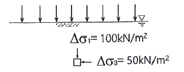
- 50 kN/m2
- 75 kN/m2
- 100 kN/m2
- 125 kN/m2
(정답률: 알수없음)
62. 접지압(또는 지반반력)이 그림과 같이 되는 경우는?
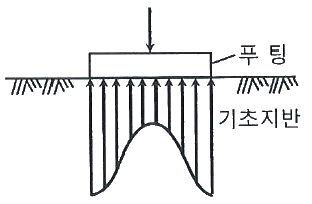
- 푸팅 : 강성, 기초지반 : 점토
- 푸팅 : 강성, 기초지반 : 모래
- 푸팅 : 연성, 기초지반 : 점토
- 푸팅 : 연성, 기초지반 : 모래
(정답률: 알수없음)
63. Terzaghi의 1차 압밀에 대한 설명으로 틀린 것은?
- 압밀방정식은 점토 내에 발생하는 과잉간극수압의 변화를 시간과 배수거리에 따라 나타낸 것이다.
- 압밀방정식을 풀면 압밀도를 시간계수의 함수로 나타낼 수 있다.
- 평균압밀도를 시간에 따른 압밀침하량을 최종압밀침하량으로 나누면 구할 수 있다.
- 압밀도는 배수거리에 비례하고, 압밀계수에 반비례 한다.
(정답률: 알수없음)
64. 간극비 e1 =0.80인 어떤 모래의 투수계수가 k1 = 8.5×10-2cm/s 일 때, 이 모래를 다져서 간극비를 e2 = 0.57로 하면 투수계수 k2는?
- 4.1 × 10-1 cm/s
- 8.1 × 10-2 cm/s
- 3.5 × 10-2 cm/s
- 8.5 × 10-3 cm/s
(정답률: 알수없음)
65. 표준관입시험(S.P.T) 결과 N값이 25이었고, 이때 채취한 교란시료로 입도시험을 한 결과 입자가 둥글고, 입도분포가 불량할 때 Dunham의 공식으로 구한 내부 마찰각(ø)은?
- 32.3°
- 37.3°
- 42.3°
- 48.3°
(정답률: 알수없음)
66. 흙의 다짐에 대한 설명으로 틀린 것은?
- 다짐에 의하여 간극이 작아지고 부착력이 커져서 역학적 강도 및 지지력은 증대하고, 압축성, 흡수성 및 투수성은 감소한다.
- 점토를 최적함수비보다 약간 건조측의 함수비로 다지면 면모구조를 가지게 된다.
- 점토를 최적함수비보다 약간 습윤측에서 다지면 투수계수가 감소하게 된다.
- 면모구조를 파괴시키지 못할 정도의 작은 압력으로 점토시료를 압밀할 경우 건조측 다짐을 한 시료가 습윤측 다짐을 한 시료보다 압축성이 크게 된다.
(정답률: 알수없음)
67. 현장에서 완전히 포화되었던 시료라 할지라도 시료 채취 시 기포가 형성되어 포화도가 저하될 수 있다. 이 경우 생성된 기포를 원상태로 용해시키기 위해 작용시키는 압력을 무엇이라고 하는가?
- 배압(back pressure)
- 축차응력(deviatro stress)
- 구속압력(confined pressure)
- 선행압밀압력(preconsolidation pressure)
(정답률: 알수없음)
68. 지표에 설치된 3m×3m 의 정사각형 기초에 80 kN/m2의 등분포하중이 작용할 때, 지표면 아래 5m 깊이에서의 연직응력의 증가량은? (단, 2 : 1 분포법을 사용한다.)
- 7.15 kN/m2
- 9.20 kN/m2
- 11.25 kN/m2
- 13.10 kN/m2
(정답률: 알수없음)
69. 지표면에 수평이고 옹벽의 뒷면과 흙과의 마찰각이 0°인 연직옹벽에서 Coulonb 토압과 Rankine 토압은 어떤 관계가 있는가? (단, 점착력은 무시한다.)
- Coulomb 토압은 항상 Rankine 토압보다 크다.
- Coulomb 토압과 Rankine 토압은 같다.
- Coulomb 토압이 Rankine 토압보다 작다.
- 옹벽의 형상과 흙의 상태에 따라 클 때도 있고 작을 때도 있다.
(정답률: 알수없음)
70. 그림과 같이 지표면에 집중하중이 작용할 때 A점에서 발생하는 연직응력의 증가량은?
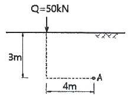
- 0.21 kN/m2
- 0.24 kN/m2
- 0.27 kN/m2
- 0.30 kN/m2
(정답률: 알수없음)
71. 다음 지반 개량공법 중 연약한 점토지반에 적합하지 않은 것은?
- 프리로딩 공법
- 샌드 드레인 공법
- 페이퍼 드레인 공법
- 바이브로 플로테이션 공법
(정답률: 알수없음)
72. 3층 구조로 구조결합 사이에 치환성 양이온이 있어서 활성이 크고, 시트(sheet) 사이에 물이 들어가 팽창·수축이 크고, 공학적 안정성이 약한 점토 광물은?
- sand
- illite
- kaolinite
- montmorillonite
(정답률: 알수없음)
73. 연약지반에 구조물을 축조할 때 피에조미터를 설치하여 과잉간극수압의 변화를 측정한 결과 어떤 점에서 구조물 축조 직후 과잉간극수압이 100 kN/m2 이었고, 4년 후에 20 kN/m2 이었다. 이때의 압밀도는?
- 20%
- 40%
- 60%
- 80%
(정답률: 알수없음)
74. 다음 연약지반 개량공법 중 일시적인 개량공법은?
- 치환 공법
- 동결 공법
- 약액주입 공법
- 모래다짐말뚝 공법
(정답률: 알수없음)
75. 사면안정 해석방법에 대한 설명으로 틀린 것은?
- 일체법은 활동면 위에 있는 흙덩어리를 하나의 물체를 보고 해석하는 방법이다.
- 마찰원법은 점착력과 마찰각을 동시에 갖고 있는 균질한 지반에 적용된다.
- 절편법은 활동면 위에 있는 흙을 여러 개의 절편으로 분할하여 해석하는 방법이다.
- 절편법은 흙이 균질하지 않아도 적용이 가능하지만, 흙 속에 간극수압이 있을 경우 적용이 불가능하다.
(정답률: 알수없음)
76. 도로의 평판 재하 시험에서 1.25mm 침하량에 해당하는 하중 강도가 250 kN/m2 일 때 지반반력 계수는?
- 100 MN/m3
- 200 MN/m3
- 1000 MN/m3
- 2000 MN/m3
(정답률: 알수없음)
77. 4.75mm체(4번 체) 통과율이 90%, 0.075mm체(200번 체) 통과율이 4%이고, D10 = 0.25mm, D30 = 0.6mm, D60 = 2mm인 흙을 통일분류법으로 분류하면?
- GP
- GW
- SP
- SW
(정답률: 알수없음)
78. 그림과 같이 동일한 두께의 3층으로 된 수평 모래층이 있을 때 토층에 수직한 방향이 평균 투수계수(kv)는?
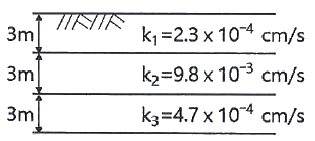
- 2.38×10-3 cm/s
- 3.01×10-4 cm/s
- 4.56×10-4 cm/s
- 5.60×10-4 cm/s
(정답률: 알수없음)
79. 어떤 점토지반에서 베인 시험을 실시하였다. 베인의 지름이 50mm, 높이가 100mm, 파괴 시 토크가 59 N·m 일 때 이 점토의 점착력은?
- 129 kN/m2
- 157 kN/m2
- 213 kN/m2
- 276 kN/m2
(정답률: 알수없음)
80. 그림과 같은 정사각형 기초에서 안전율을 3으로 할 때 Terzaghi의 공식을 사용하여 지지력을 구하고자 한다. 이때 한 변의 최소길이(B)는? (단, 물의 단위중량은 9.81 kN/m3, 점착력(c)은 60 kN/m2, 내부 마찰각(ø)은 0° 이고, 지지력 계수 Nc = 5.7, Nq = 1.0, Nγ = 0 이다.)
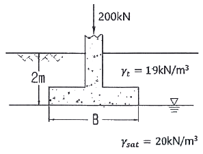
- 1.12m
- 1.43m
- 1.51m
- 1.62m
(정답률: 알수없음)